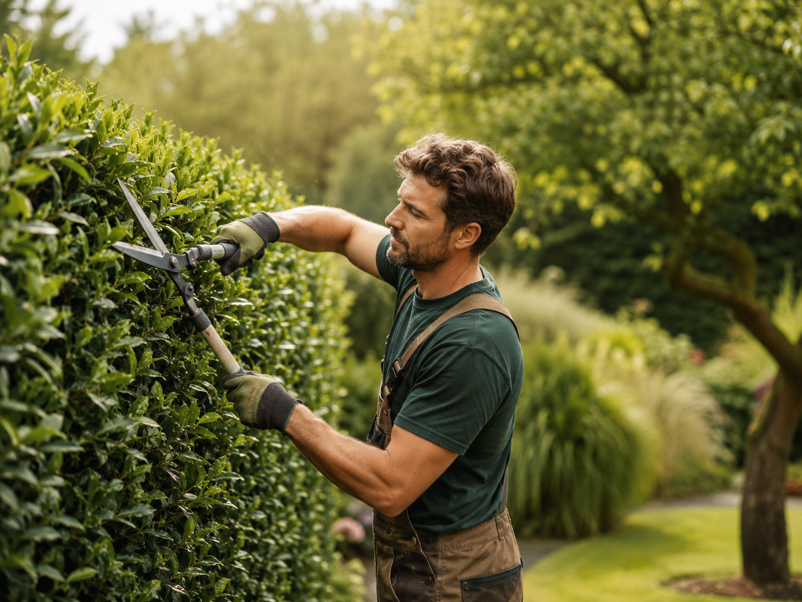
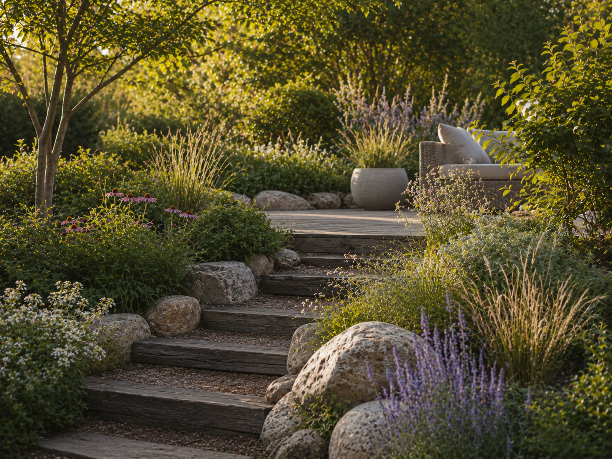
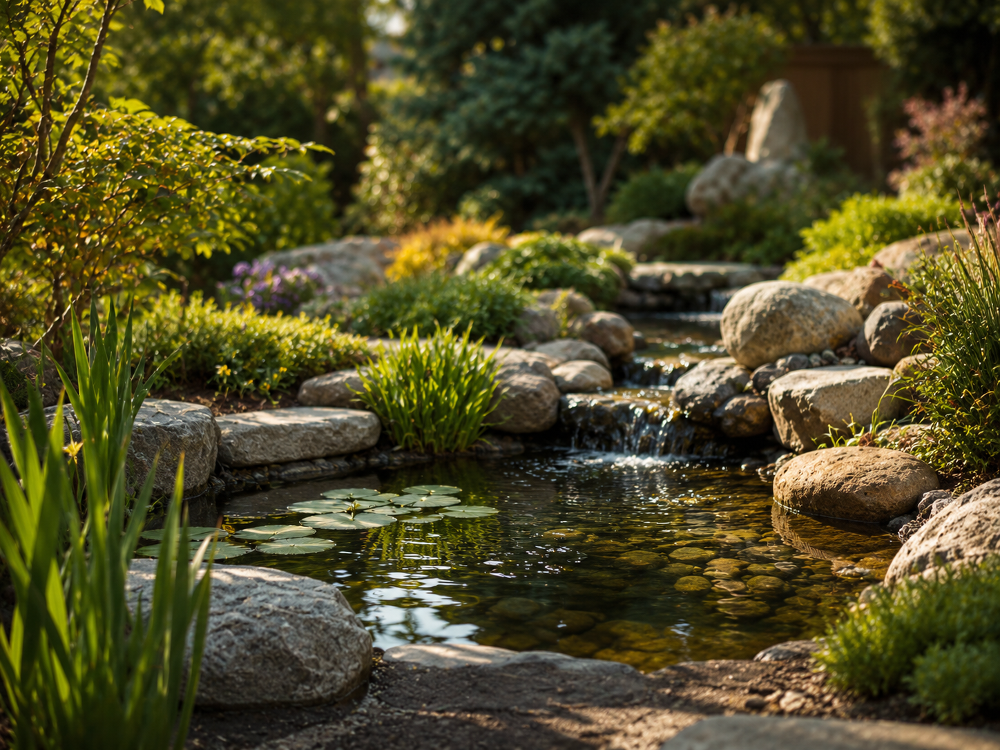
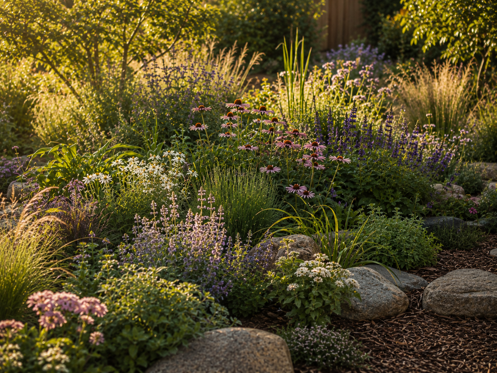

Pflege
Gartenpflege & Rückschnitt
Saisonale Pflege, Rückschnitt, Kanten, Flächen und kleine Instandsetzungen für einen Garten, der ordentlich bleibt, ohne steril zu wirken.
Mehr erfahrenGarten- und Landschaftsbau in NRW
Pflege, Gestaltung und handwerkliche Arbeiten für Gärten, Wege, Wasserstellen und naturnahe Lebensräume. Persönlich betreut, klar geplant und passend zum Grundstück umgesetzt.
Der Ansatz
Ein Außenbereich ist mehr als eine gepflegte Fläche. Er kann Rückzugsort, Nutzraum, Lebensraum und Visitenkarte zugleich sein. Deshalb beginnt gute Arbeit nicht mit einer Standardlösung, sondern mit einem genauen Blick auf Grundstück, Nutzung, Bestand und Budget.
Der Schwerpunkt liegt auf überschaubaren Pflege- und Gestaltungsaufträgen, kleinen baulichen Arbeiten sowie naturnahen Bereichen. Vor jedem Auftrag wird geprüft, welche Lösung fachlich sinnvoll und im gegebenen Rahmen umsetzbar ist.
Leistungsschwerpunkte

Saisonale Pflege, Rückschnitt, Kanten, Flächen und kleine Instandsetzungen für einen Garten, der ordentlich bleibt, ohne steril zu wirken.
Mehr erfahren
Beete, Wege, kleine Sitzbereiche und Strukturen, die zum Grundstück passen und langfristig ein stimmiges Gesamtbild ergeben.
Mehr erfahren
Kleine Teiche, Uferzonen und Wasserstellen mit natürlicher Einbindung und einem klaren Blick auf Pflege und Funktion.
Mehr erfahrenPlanung & Beratung
Zu Beginn werden Wünsche, vorhandene Strukturen, Pflegeaufwand und Budget gemeinsam geklärt. Daraus entsteht ein nachvollziehbarer Vorschlag – bei Bedarf ergänzt durch Skizzen oder eine einfache räumliche Visualisierung.
Arbeitsweise
Wer einen Garten oder Außenbereich verändern lässt, braucht belastbare Absprachen. Deshalb werden Leistungsumfang, Material, Aufwand und Zeitrahmen vor der Ausführung verständlich geklärt.

So läuft ein Projekt ab
Kurze Beschreibung, Fotos, Standort und gewünschter Zeitraum reichen für die erste Einordnung.
Vor Ort werden Bestand, Zugänglichkeit, Aufwand und sinnvolle Möglichkeiten geprüft.
Leistungsumfang, Materialien, Zeitrahmen und Kosten werden verständlich festgelegt.
Die Arbeiten erfolgen geordnet, nachvollziehbar und passend zum vereinbarten Rahmen.
Besonderer Schwerpunkt
Bei passenden Projekten können naturnahe Außen- und Innenbereiche für Tiere geplant und gestaltet werden. Im Mittelpunkt stehen Struktur, Schutz, Materialwahl, Aufenthaltsqualität und eine möglichst natürliche Wirkung.
Projektidee vorhanden?
Schilder kurz, was gemacht werden soll. Fotos, ungefähre Größe, Ort und Wunschzeitraum helfen bei einer realistischen ersten Einschätzung.